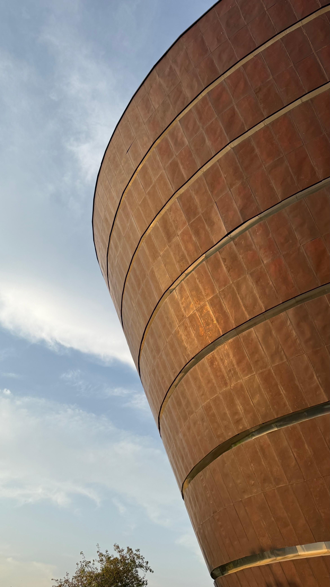
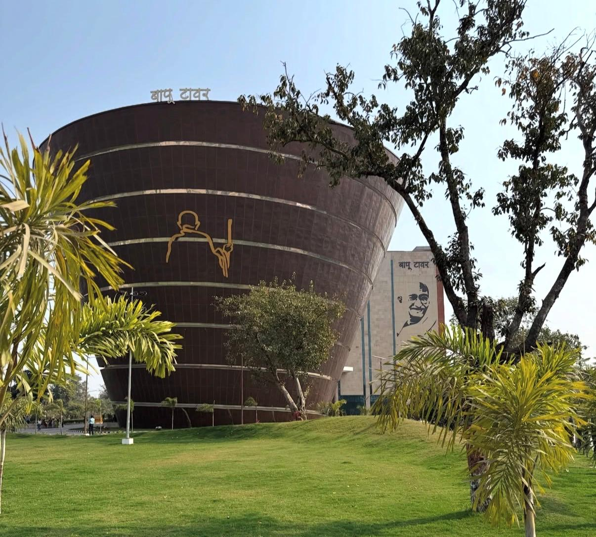

№ 01
Chef's Special
Litti, Three Ways
Smoked sattu litti with tomato chokha, brown-butter ghee, and a charred baingan emulsion.
₹ 745
100% Pure Vegetarian · Bapu Tower · Patna
Where Patna meets the sky — a 100% pure-vegetarian fine-dining room and artisan café at Bapu Tower.
02 — Our Story


Beyond Dining began with a simple question — why should Bihar's vegetarian table, one of the oldest cuisines on earth, not be served with the ceremony it deserves?
Our kitchen takes what generations of Bihari homes have perfected — litti smoked over open flame, paneer dum-cooked the Champaran way in sealed clay handis, sattu ground fresh each morning — and gives it the space, technique, and theatre of a modern fine-dining room. Every plate is, and will always be, 100% vegetarian.
The café is our softer side: a slow-morning room of single-origin coffee, French pastry, and khaja from Silao — because heritage tastes best unhurried.

03 — The Address
Bapu Tower rises from Gardanibagh as Bihar's tribute to Mahatma Gandhi — a six-floor, inverted-cone museum of his life and values, its copper crown widening toward the sky.
Beyond Dining is honoured to share this address. We keep the tribute where it belongs — in the tower's galleries below — and offer, in return, a table where Bihar's living culture is celebrated every evening.
Floor-to-ceiling glass frames Patna's rooftops — from Gardanibagh's greens to the Ganga's haze on the horizon.
Steps from the museum galleries — arrive early, walk the exhibits, then dine above them.
Sunset over the city from the tower's upper floors. We hold our best window tables for it.
04 — Cuisine
Bihar's canon, re-plated. Each dish begins in a village kitchen and ends under a cloche.
Smoked sattu litti with tomato chokha, brown-butter ghee, and a charred baingan emulsion.
₹ 745
Malai paneer sealed in a clay handi with mustard oil and whole garlic, slow-cooked the Champaran way. Cracked open at your table.
₹ 945
Fox nuts from Mithila's ponds, finished like a risotto with parmesan, saffron, and lotus crisp.
₹ 895
A nine-bowl seasonal thali — dal pitha, kadhi badi, chura-dahi, and whatever the river markets bring.
₹ 1,39506 — Ambience


08 — Word of Mouth
“I came for the view and stayed three hours for the litti. My grandmother's kitchen, wearing a tuxedo.”
“The dum paneer arrives still sealed in its clay handi. When they crack it open at the table, the whole room turns to look.”
“Sunset over the Ganga, a kulhad chai flight, and khaja mille-feuille. Patna has never felt this glamorous.”
09 — Reservations
Window tables for sunset are released thirty days ahead and go quickly. For parties of eight or more, or the chef's counter, call us directly.
10 — Visit
Upper Floors, Bapu Tower
Gardanibagh
Patna, Bihar 800002
Café · Tue–Sun · 9 am – 6 pm
Dinner · Tue–Sun · 6:30 pm – 11 pm
Closed Mondays
Ten minutes from Patna Junction, on the Gardanibagh greens. Valet at the tower's east entrance; take the express lift to the restaurant floors.